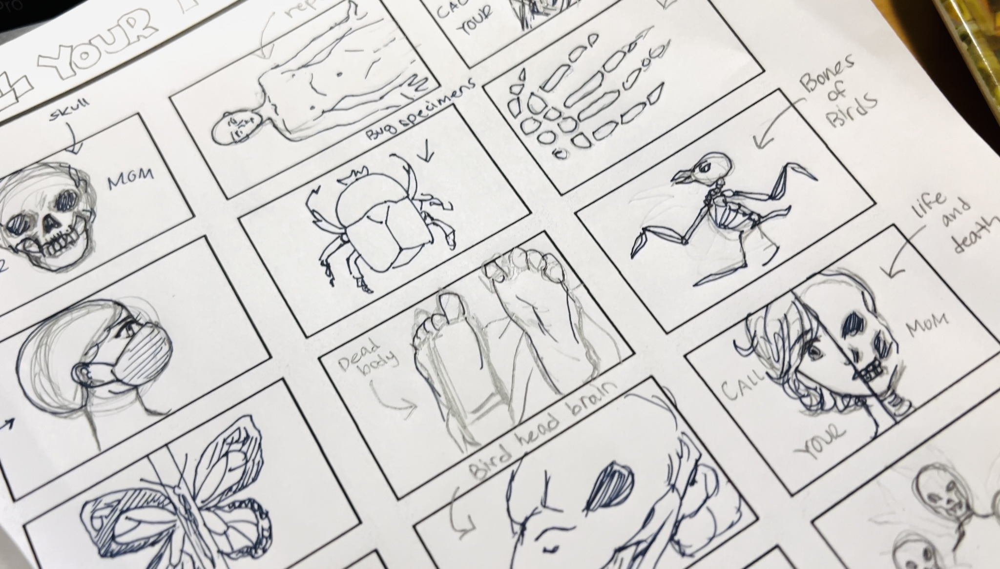

Book Cover Trilogy
Podcast into Book Covers
We were tasked to create three book covers based on the podcasts we've chosen from a list. I've chosen Phoebe Judge. Each podcasts found within the Phoebe Judge episodes deals with alot of mysteries and horrors which I tend to enjoy.
It took time to figure out what the book cover of each story should look like. There were mutiple sketches but many of them did not fit the storyline. Eventually, I found the solution and I discovered the right "face" of the "Call Your Mom" podcast. The experience of the this design process has taught me how to be able to execute specific deliverables.
Client: Emily Moody
Service: Visual Identity Design, Graphic Design
Skills: Adobe InDesign, Adobe Photoshop
